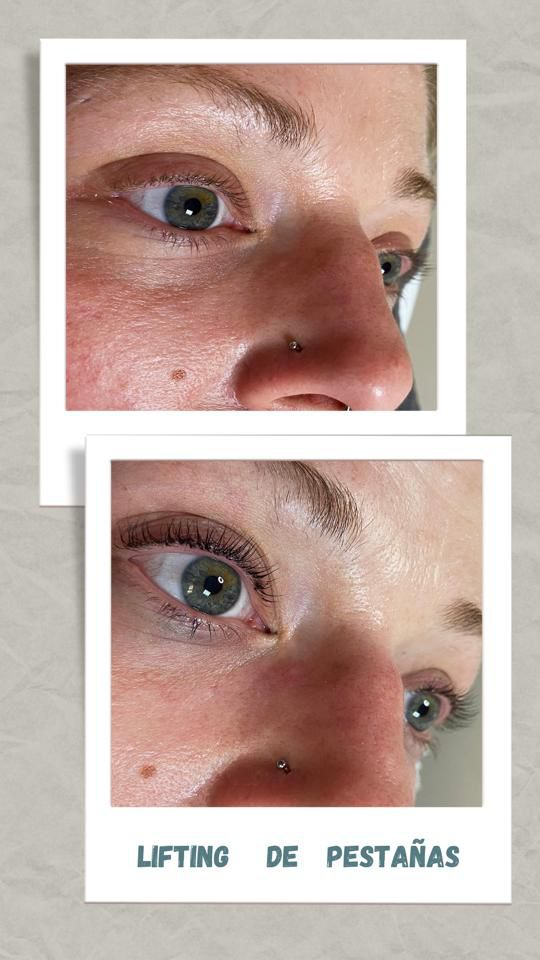

Tratamientos de pestañas
Lifting de Pestañas
Este tratamiento consiste en colocar las pestañas, sacándoles el máximo partido, con un efecto rimel perfecto, para que se vean más altas y más bonitas.
En el rincón de Lara, donde también se llevan a cabo otros tratamientos, nos encargaremos de hacer el lifting.
Como este tratamiento se hace en camilla, y su duración son unos 75 minutos, nos permite hacer a la vez a la clienta otros como, manicura, pedicura o manicura y pedicura a la vez, pudiendo hacerse tres tratamientos a la vez y sentirse como una reina, a la vez que ahorra tiempo
Extensión de Pestañas
Tratamiento que realiza Lara y que consiste en realzar la mirada, poniendo pestañas pelo a pelo para dar tanto volumen como largura a tu pestaña natural. Dependiendo del número de pelos que se pongan en cada pestaña, se puede llamar 2d, 3d, 4d, etc. También, dependiendo del diseño, se puede conseguir un efecto rimmel, efecto gato, efecto pin-up, y todo lo que se te ocurra de fantasía para tu mirada, puesto que también se pueden poner con brillos, colores vivos, incluso con Swarovski. ¿Te animas?
Este tratamiento tiene un mantenimiento que se debe cumplir religiosamente cada 3 semanas, y te enseñamos a cuidarlas para que su aspecto no pierda su belleza.
Cuidados de Piel
En la estética, las uñas no son lo único importante. La belleza también se encuentra en la piel, y hay que cuidarla más que a nada.
En nuestro centro ofrecemos distintos servicios para el cuidado del cuerpo.
Depilación
Para aquellas personas que busquen también lidiar con el vello en zonas no deseadas, contamos con distintos métodos de depilación, para dejar la piel suave, tanto para hombres como mujeres:
Depilación Láser
La depilación láser es una técnica de depilación que, por medio de ráfagas de un láser de diodo, quema las raíces de los pelos, previniendo que vuelvan a aparecer.
Este tratamiento no es instantáneo, hace falta unas cuantas sesiones para que dejen de salir pelos, dependiendo ya de la piel de la persona, pero deja unos resultados increíbles.
Depilación con Cera
La clásica de cera caliente: Aplicamos la cera en la piel mientras está caliente, esperamos a que se enfríe y agarre bien, y luego de un tirón sale el pelo de la zona.
Es la preferida de muchos, ya que es rápido y deja muy buenos resultados.
Nuestra especialización son las cejas
Depilación con Hilo
Esta técnica es muy interesante y se hace para quitar vello facial y corporal. Por medio del movimiento de dos hilos, limpia muy bien la zona, porque quita vello más nuevo y el que no sale con la cera, pero se aprecia de cerca. En el caso de la ceja, la deja super limpia y definida.
Lara es la especializada en hacerlo, y las clientas salen encantadas siempre.
Tratamientos faciales
Limpieza de cutis donde, además de nuestras manos, utilizamos ultrasonidos para sacar las impurezas de los poros, y aportar además elasticidad, hidratación y bienestar a la piel, finalizando el tratamiento con una mascarilla de arginatos.
Es nuestro tratamiento top en cabina, lo realizamos con una pala galvánica y productos de nuestra marca Artistry, con la que venimos trabajando desde hace dos años y que, combinándolo, tenemos un tratamiento muy completo y muy efectivo.Higiene facial completa
Cuidamos mucho nuestros productos de cabina para crear un ambiente relajante, en el que incluimos la música, iluminación y aromas, que hacen que sea un tratamiento muy popular en nuestro centro.
Beauty y vitamina C
Recomendamos hacerlo pasadas 2/3 semanas de una higiene facial, porque lo que se consigue con la vitamina C pura es una piel muy jugosa, que ya estaba limpia y permite la absorción de todos los principios activos que usamos en cabina para apreciar su iluminación.
Higiene con microdermoabrasión
Es nuestra higiene más agresiva, que solo se puede realizar de octubre a abril, porque la punta de diamante con la que se realiza hace un barrido, lijado o arrastre de células, marcas y manchas en la piel, finalizando este tratamiento también con nuestro masaje manual y mascarilla de arginatos.
No lo realizamos el resto del año porque es incompatible con la exposición al sol.
Tratamiento iluminador
Es un tratamiento que al principio se pensó para las novias por buscar esa iluminación especial en un día señalado, pero lo realizamos a todas las mujeres que quieren algo más en su piel.
Lo realizamos con partículas de polvo de perlas y polvo de oro, que consiguen ese efecto en nuestros productos.
Tratamientos corporales
Masajes
Además de los tratamientos de belleza, también ofrecemos masajes.
Las tres somos masajistas, pero entre los títulos que tienen Keka y Vero, destacan los de distintas técnicas relacionadas al masaje, como la acupuntura, el drenaje linfático, la técnica nimmo, el vendaje neuromuscular o el masaje deportivo.
Masaje descontracturante
El masaje descontracturante mejora la musculatura y liberar tensiones y pequeñas lesiones que se crean en el día a día en cualquier trabajo.
Se puede dar a cualquier persona, indicado por su médico o fisioterapeuta, o para sobrellevar las dolencias del día a día.
Masaje relajante
Tenemos dos versiones, que son a dos manos o a cuatro manos. Se crea un ambiente zen en la sala, se aplica con aceites aromáticos y es el mejor regalo que puedes dar o recibir. Es el top 10 de los bonos regalos del centro.
Presoterapia
La presoterapia es un tratamiento que consiste en aplicar presión sobre los tejidos del cuerpo, con el fin de mejorar la circulación sanguínea y la elasticidad de la piel.
Nuestra máquina de presoterapia tiene mucho éxito, y al terminar la sesión notarás una agradable sensación de relajación en las piernas, porque es un equipo recomendado por médicos de operaciones estéticas para la recuperación post-operatoria de esa rama de la medicina.
Es un equipo avanzado que tiene varios programas, entre los que destaca uno para embarazadas, en los que liberará líquidos y tensiones propios de su estado.
Chocolaterapia
Es un tratamiento preparador de la piel, en el que todos sus productos están hechos con chocolate. Trata de exfoliación, mascarilla de envoltura y sauna en camilla, con el calor de ésta, y la anterior preparación de la piel, se consigue una hidratación, limpieza y bienestar de la piel de cintura para abajo, que estaría preparada sin impurezas, por ejemplo, para dar la bienvenida al verano y al sol, o también sería perfecta para dar por finalizado el verano con la piel cuidada.
Tratamiento Reductor
Tratamiento muy demandado en el mundo de la estética, y que en nuesto centro valora la esteticista qué utiliza con cada persona, lo personaliza y puede utilizar masaje manual anticelulítico, bambuterapia, ventosas, cavitación o radiofrecuencia, y siempre finalizamos con nuestra presoterapia Novapress de Novasonix, consiguiendo ayudar a nuestra clienta a reducir volumen, eliminar líquidos y a la vez cuidar su piel.